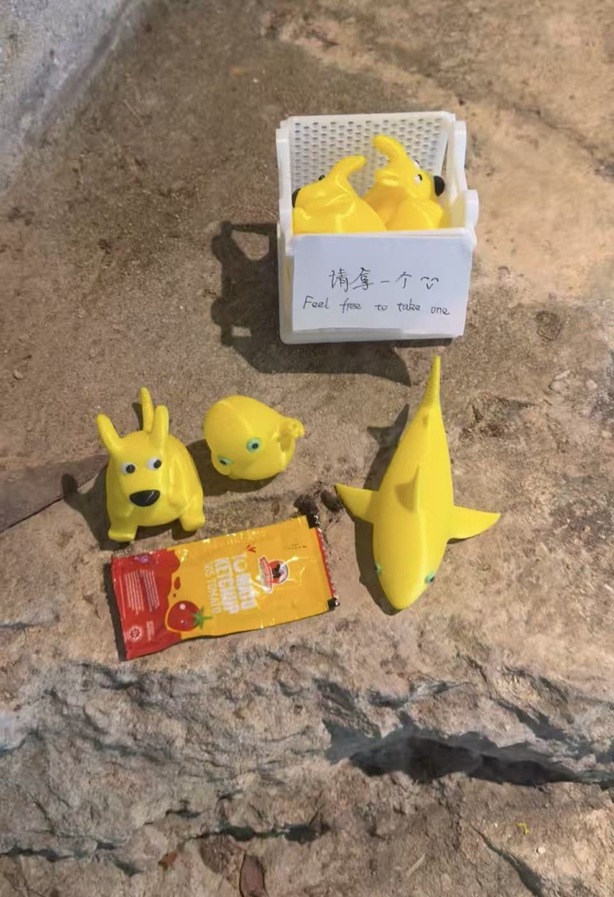
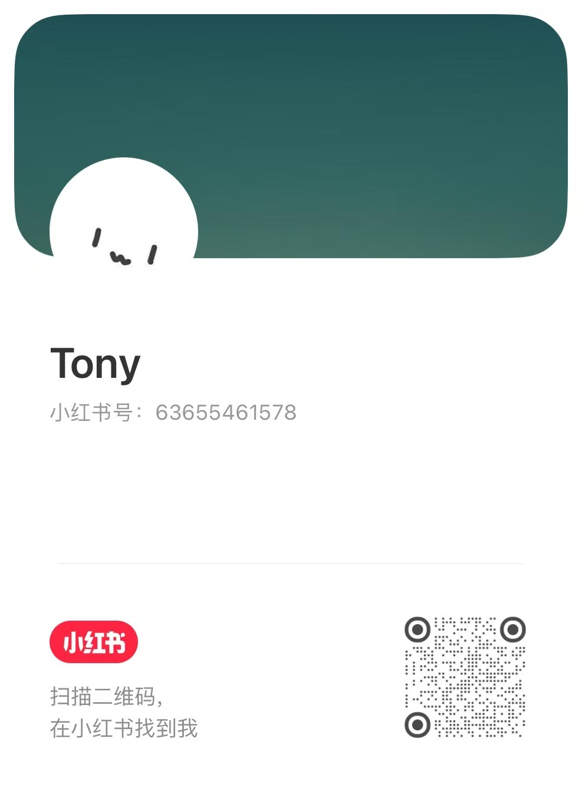

奶蛙
这是什么？
这是奶蛙，是一个十分流行的中国meme形象。这里的所有奶蛙形象都由3D打印制作而成，感谢所有的开源模型者们。
不定期补货/上新（最近仍然在找工作中，为啥大家都有offer了而我还是0offer，学机械怎么就这么难捏(╥ω╥`) ）

目前存在的形象
什么是奶蛙？
如果你认识奶龙，第一次看到奶蛙时，可能会有一点疑惑：它还是黄色的，也有一个大肚子，可眼睛、表情和身体比例，好像都变得不太一样了。
奶蛙是网友围绕奶龙形象创作、传播的一类变体。黄色身体、圆圆的肚子、绿色眼睛，是许多版本共有的特征；至于它到底应该长什么样，却没有一个人人都遵守的答案。有的呆呆地站着，有的笑得前仰后合，有的被放进电影、绘画和日常生活，还有的变成了小摆件。
这些形象经常被混着叫，版本之间也没有整齐的边界。在这个网站里，我们把这类由网友不断改造的形象统称为“奶蛙”。这是为了方便讲述，并不意味着它们都出自同一个作者，也不意味着所有变体都有相同的来源。
奶蛙有趣的地方，就在于它始终可以变化。你可能认得出它来自哪里，却猜不到下一张图里它会做什么。熟悉的颜色和眼睛，把许多看起来毫不相干的创作连在了一起。
借助AI，网友可以让它换一个动作、进入一个场景，或者与另一种动物结合。一张图又会成为下一张图的起点：有人接着修改，有人换上自己的配文，也有人把屏幕里的形象做成可以拿在手里的东西。
于是，奶蛙渐渐成了一张大家都能往上添几笔的画布。你可以只是看一看、笑一笑，也可以亲自做出一个版本。它未必需要复杂的故事，有时候，一个表情就足够装下你今天的心情。
为什么大家喜欢奶蛙
我不能替所有喜欢奶蛙的人回答这个问题。有人觉得它好笑，有人喜欢它笨拙的样子，也有人只是享受把一个熟悉形象改得面目全非的过程。
对我来说，它吸引人的地方，是那种“我也可以试试”的感觉。
你不必先学会画一张漂亮的画，也不必准备一套完整的设定。一个突然冒出来的念头，就可以成为创作的开始：让它变成猫，让它出现在海边，或者只是给它换一张有点奇怪的脸。做出来不满意，就再改一次。这个过程本身也可以很好玩。
AI让其中一些尝试变得更容易。那些原本只能停留在脑海里的画面，现在有了被看见的机会。你仍然需要选择、判断和修改，但不必等到掌握所有技巧，才开始表达。
我想把这种感受叫作“奶蛙主义”。
这不是一个已经被大家共同定义好的网络流派，只是我借奶蛙说出的个人理解：允许自己因为喜欢而创作，也愿意给别人的喜欢留一点空间。
在这里，我希望我们不必因为作品稚拙、奇怪，或只是单纯好玩，就急着否定彼此。你可以认真做，也可以随手试；可以追求精致，也可以保留一点笨拙。一次尝试不需要承担证明自己有才华的任务。
当然，我们可以讨论作品好不好看，也可以提出意见。只是当我们说“我不喜欢”的时候，或许可以多想一步：我不喜欢的是这个形象，还是它反复出现的方式？我的审美，是否足以解释另一个人为什么开心？
奶蛙或许只是一张画布，承载着我们的灵感。角色只是载体，真正值得被看见的，是藏在它背后的情感。
写在后面
有时候，我们讨厌的或许并不是一个事物本身，而是它被反复呈现在我们眼前的某一种模样。
当一种形象被不断重复、模仿，甚至成为某种网络符号时，我们很容易忘记，它最初也只是一个被人喜欢的角色。
就像今天的孩子一遍遍画着奶龙。在成年人的眼中，那些稚拙而相似的线条，或许只是“什么都画成奶龙”；可对孩子而言，那也许只是喜欢最直接的表达。
忽然想起，我们小时候大概也是如此。
那时的喜羊羊、奥特曼，或者某一个叫得出名字的动画角色，也曾占据过无数张作业纸的角落。我们并没有想过自己画得好不好，只是因为喜欢，所以想让它出现在自己的笔下。
长大以后，我们渐渐学会了审美，也学会了判断，却也因此更容易用自己的经验替别人定义事物。可对于另一个年龄、另一群人来说，我们觉得俗套、泛滥甚至厌烦的东西，也许正承载着他们最简单的快乐、想象与表达。
很多时候，我们以为自己是在评价一个事物，其实评价的只是自己所看见的那一面。愿意暂时放下已经形成的印象，再从另一个人的眼睛里看一次，也许事物本身并没有改变，改变的只是我们理解它的方式。
做这个网站，也是想为这些喜欢和创作留下一个小小的位置。让路过的人知道，一张看起来莫名其妙的图后面，也可能有一个认真想过、反复修改过，或者终于把心里的画面做出来的人。
不要急着因为偏见，为尚未真正理解的事物写下定义。也不要因为害怕，而折断了自己创作的画笔。
尽情创作吧。
再一次感谢AI，也再一次感谢所有创造奶蛙的人。
如果您对于这些作品/3D打印/我个人比较感兴趣，欢迎关注我的小红书账号，不定期更新日常。
Tony小红书号：63655461578

扫描二维码，或在小红书搜索账号；点击图片可放大查看。
没有匹配内容，换一个关键词试试。